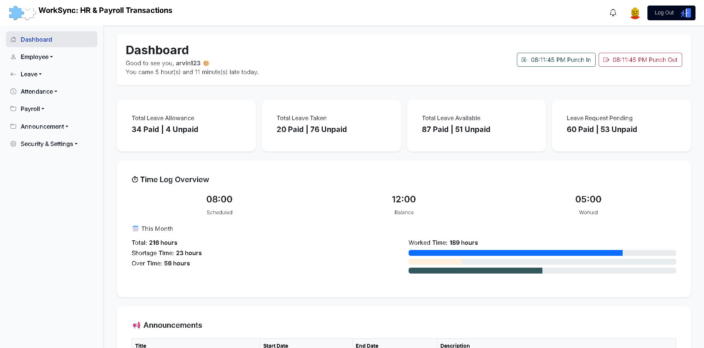
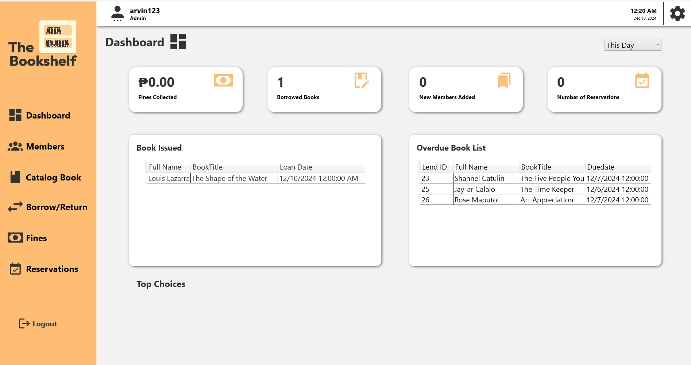

UI/UX Design
- Wireframing and user flow mapping
- Figma prototyping and design systems
- User research basics and usability testing
- Accessibility-first interface decisions
University of Mindanao
UI/UX • IT Internship Candidate
I create user-centered digital experiences that are both visually polished and practical. My focus is turning user needs into clean interfaces and clear workflows.
I am a UI/UX-focused IT student who enjoys designing interfaces that are easy to use, accessible, and aligned with project goals. I combine design thinking with technical understanding so I can communicate clearly with both users and developers during product build-outs.
For internship opportunities, I can support wireframing, UI design, component consistency, content hierarchy, and front-end handoff for responsive web interfaces.

Designed a personalized food assistant that suggests food based on the user's preferences and health goals. Improved user engagement and satisfaction by providing personalized recommendations.
Open Project
Designed to manage human resources and payroll functions, including employee information, work hours, attendance, and roles. It also handles payroll processes and transactions efficiently. The system helps streamline HR operations and ensures accurate payroll management.
Open Project
Designed to manage library resources efficiently, including book records, borrower information, borrowing transactions, and return schedules. The system helps librarians organize and track books, monitor borrowing activities, and maintain accurate library records.
I identify user needs, project goals, and current friction points.
I create wireframes and high-fidelity layouts with clear visual structure.
I collect feedback, refine the UI, and improve clarity and consistency.
I prepare assets and support implementation for responsive front-end output.
Bachelor of Science in Information Technology
Focus Areas: UI/UX, web design fundamentals, user-centered problem solving
If you are looking for a UI/UX intern with IT foundations, I would be glad to connect.